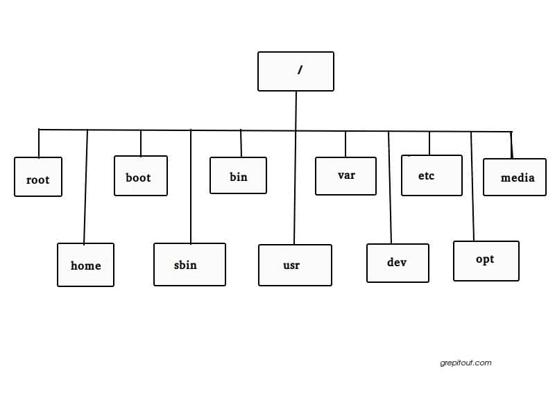

|
ΘΕΜΑΤΑ

-
Εισαγωγή στο
λειτουργικό σύστημα Linux.
-
Linux Filesystem:
root, directory tree, relative and
absolute path, home directory ( ~,
$home, $HOME), current and parent
directory (. and ..). Directories
/home (home directories), /etc
(configuration files), /bin, /usr/bin,
/usr/local/bin (program directories),
/lib, /usr/lib, /usr/local/lib
(program libraries) , /include,
/usr/include (header files for C
programs), /dev (devices), /var,
/proc, /boot, /root. Εξερευνήστε τους
παραπάνω καταλόγους και προσπαθήστε να
βρείτε τι είδους αρχεία περιέχουν
(χρησιμοποιήστε και το βιβλίο
Running Linux).

-
Βασικές εντολές:
passwd, ls,
cp, pwd
(πλοήγηση), cp,
mv, rm, ln (αρχεία
και υποκατάλογοι), cat, less, more, head, tail (εξέταση
περιεχομένου αρχείων ASCII).
ΒΙΒΛΙΟΓΡΑΦΙΑ
ΕΞΑΣΚΗΣΗ
Εισαγωγικά
σε Linux/Unix συστήματα
-
Κάνετε logon στο
σύστημα.
-
Για να κάνετε logout
πληκτρολογήστε
logout ή exit
ή <control>D.
Στα workstations
θα πρέπει να πάτε
στο αντίστοιχο window και να πιέσετε
exit ή logout.
-
Εξασκηθείτε
με τις ακόλουθες
εντολές
Το filesystem
του
Linux/Unix και χρήσιμες
εντολές
Περιηγηθείτε στο filesystem με
τις εντολές cd, ls,
pwd.
Εξετάστε τα περιεχόμενα των καταλόγων
που αναφέρονται στο παραπάνω διάγραμμα.
-
Ακολουθήστε
το
παρακάτω
tutorial. Διαβάστε
τις εντολές και επαναλάβετε.
-
Το ίδιο και με το
επόμενο
tutorial. Εξετάστε τα
περιεχόμενα των αρχείων με τις
εντολές less, more, cat.
Αντιγράψτε/αλλάξτε όνομα/διαγράψτε
αρχεία με τις εντολές cp,
mv, rm, ln.
Φτιάξτε υποκαταλόγους με την εντολή
mkdir.
-
Δείτε τη σημασία των εντολών
στο ακόλουθο tutorial
και επαναλάβετε τις εντολές
αυτές για να δείτε τι ακριβώς σας
δίνουν.
-
Αρχίστε να
γράφετε μια εντολή ή το όνομα ενός
αρχείου και δοκιμάστε να πατήσετε
το πλήκτρο Tab.
Τι παρατηρείτε;
Το σύστημα από μόνο
του συμπληρώνει το όνομα.
Δοκιμάστε με αρχεία που έχουν
παραπλήσιο όνομα.
-
Εξασκηθείτε
με τις ακόλουθες
ασκήσεις.
-
Διαβάστε και μάθετε από το Running Linux
VI
και
EMACS Editors
-
Πληκτρολογήστε την εντολή emacs.
-
Όλες οι χρήσιμες εντολές του
επεξεργαστή κειμένου emacs μπορούν
να βρεθούν σε
αυτό το link.
-
Στο παράθυρο που ανοίγει
μπορείτε να πληκτρολογήσετε ότι
θέλετε. Χρησιμοποιώντας το ποντίκι
μπορείτε να σώσετε αυτό που γράψατε
σε ένα αρχείο με ότι όνομα θέλετε.
-
Δοκιμάστε τις εντολές που
περιγράφονται στην ακόλουθη ιστοσελίδα
-
Εξασκηθείτε με αυτές
τις ασκήσεις
|